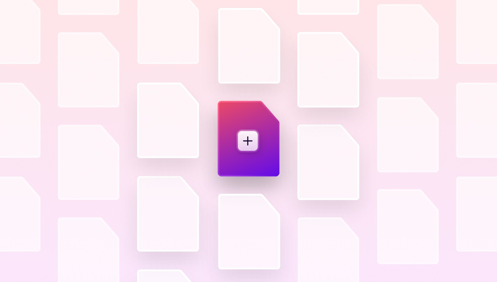

Working on Docusign’s first AI-native contract builder.

AI core experience for drafting templates.
Milestone 01.Iris chat vision features
Milestone 02.This project is hidden.
Shoot me an email if you want to know more!
Value points and takeaways
- Designers sometimes need to figure out a solution with low context and high risk. We must make tough calls, but always grounded in some trend or metric, never a baseless assumption.
- Creative block happens, but you can leverage use cases to start iterating. We are all human, therefore we are familiar with what bothers us and how we attempt resolution. Solutions then become infinite.
Notes from mentors
“Jordan has worked on so many big-scale designs across Docusign, setting a high bar for commitment, challenging ideas, and being comfortable in stressful situations.”
“Jordan has been keeping up with the speed of the team, managing items well and delivering quickly. Especially on a product with many twists.”
Unconditionally grateful for this team!
Across product, engineering, design, research, and more...